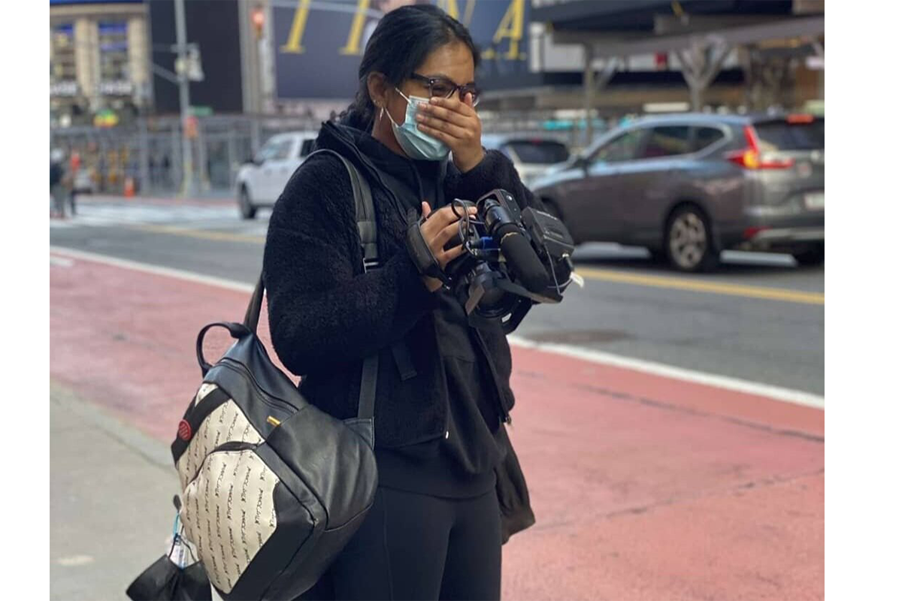
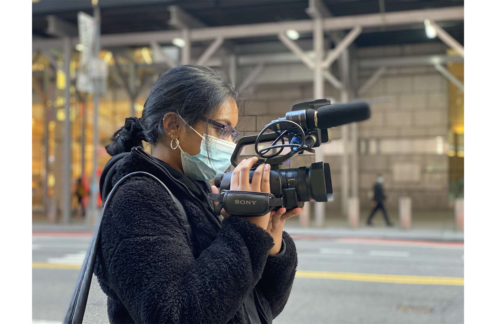
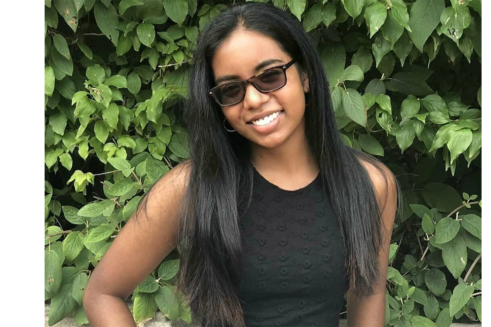

My name is Camille and in 2021 I graduated from The City College of New York with a Film BFA degree. Though I went to college for filmmaking, I discovered it was my passion while I was a student at DCTV. I started as a film student in 2015, but during my five years in this program I’ve also interned, taught classes, freelanced, and co- directed an HBO Film.
I've worked with countless individuals that have taught me so much and have inspired me to do what I do now, use film to tackle the subjects that are hard to talk about. Mental health, harassment, and religion / spirituality are just a few topics I’ve covered in efforts to raise awareness and create dialogue. For example, my thesis film The Impact discusses street harassment and the harmful effect it has on those subjected to it.
I’d love nothing more than to continue my journey in the film industry and to be able to reach and connect with people through this beautiful medium. Thank you for visiting my website and for taking the time to read a little bit about me.